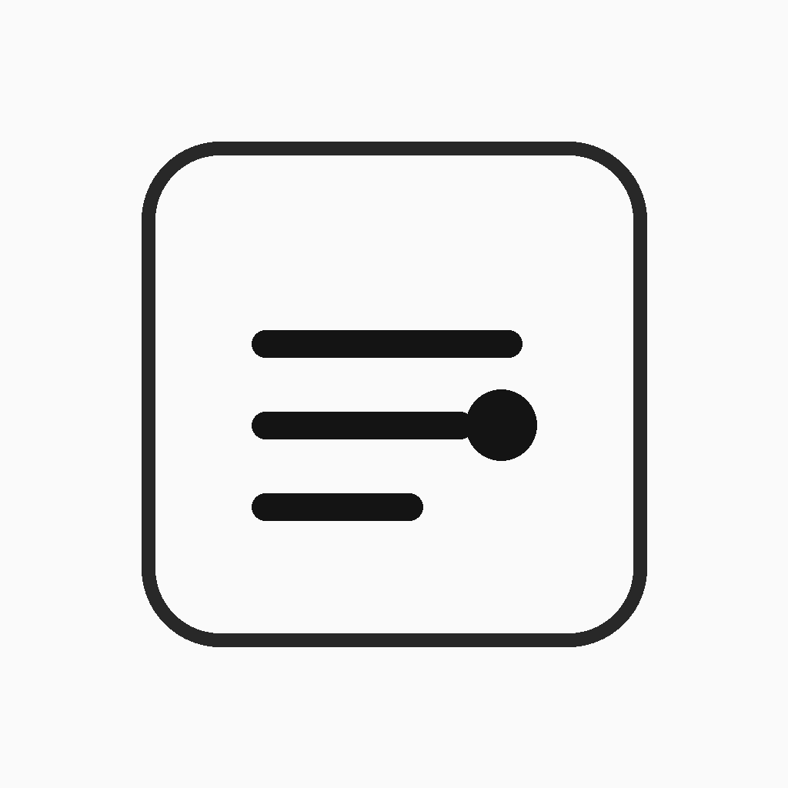

Tap a button to make a number go up or down.
Count pushups, situps, workouts, books read, practice sessions, or anything else that works as a running total.

SelfStatsSimple iPhone stat tracking
Keep score of the things you want to do more often. Workouts, miles run, pushups, hikes, habits, books, practice sessions, or anything else you want credit for.
No accounts. No social feed. Just your own personal stat sheet.
Keep your own stats
SelfStats gives you a durable record of the things you do. Tap to add to a stat, check off a habit, or enter a number. Over time, your everyday actions turn into totals, streaks, rates, and year-by-year stats you can actually look back on.
Simple tracking
Open the app, tap the stat, and get on with your day. SelfStats is built for low-friction logging, not long setup flows.
Count pushups, situps, workouts, books read, practice sessions, or anything else that works as a running total.
Track miles run, time spent, weight lifted, pages read, or other stats where each entry should keep its own number.
Use checkbox stats for habits you want to record once per day, then see how often you kept them going.
Themes, totals, and details
Group stats into themes like Fitness, Habits, Hiking, Reading, or anything else you want to track. The totals view gives you a quick, customizable overview, and each stat has its own detail page.
Choose the stats you want in view and scan your progress quickly.
Review streaks, rates, history, and year-by-year progress.
Tap into a stat when you need to correct, adjust, or review entries.
Your data belongs to you
Your stats should not be trapped in an app. SelfStats lets you copy and paste stats into spreadsheets, export CSV files, and back up app data as JSON.
Copy and paste stats into a spreadsheet when you want to sort, chart, or archive them.
Export stat data as CSV files for your own records or analysis.
Back up the app's data as JSON so you can keep a full copy.
SelfStats runs on your device and does not collect your personal data.